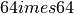
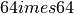

Note
Click here to download the full example code
Downsize MRI image using pydicom¶
This example shows how to downsize an MR image from  to
. The downsizing is performed by taking the central section
instead of averagin the pixels. Finally, the image is store as a dicom image.
to
. The downsizing is performed by taking the central section
instead of averagin the pixels. Finally, the image is store as a dicom image.
Note
This example requires the Numpy library to manipulate the pixel data.
Out:
The image has 64 x 64 voxels
The downsampled image has 8 x 8 voxels
The information of the data set after downsampling:
Dataset.file_meta -------------------------------
(0002, 0000) File Meta Information Group Length UL: 190
(0002, 0001) File Meta Information Version OB: b'\x00\x01'
(0002, 0002) Media Storage SOP Class UID UI: MR Image Storage
(0002, 0003) Media Storage SOP Instance UID UI: 1.3.6.1.4.1.5962.1.1.4.1.1.20040826185059.5457
(0002, 0010) Transfer Syntax UID UI: Explicit VR Little Endian
(0002, 0012) Implementation Class UID UI: 1.3.6.1.4.1.5962.2
(0002, 0013) Implementation Version Name SH: 'DCTOOL100'
(0002, 0016) Source Application Entity Title AE: 'CLUNIE1'
-------------------------------------------------
(0008, 0008) Image Type CS: ['DERIVED', 'SECONDARY', 'OTHER']
(0008, 0012) Instance Creation Date DA: '20040826'
(0008, 0013) Instance Creation Time TM: '185434'
(0008, 0014) Instance Creator UID UI: 1.3.6.1.4.1.5962.3
(0008, 0016) SOP Class UID UI: MR Image Storage
(0008, 0018) SOP Instance UID UI: 1.3.6.1.4.1.5962.1.1.4.1.1.20040826185059.5457
(0008, 0020) Study Date DA: '20040826'
(0008, 0021) Series Date DA: ''
(0008, 0022) Acquisition Date DA: ''
(0008, 0030) Study Time TM: '185059'
(0008, 0031) Series Time TM: ''
(0008, 0032) Acquisition Time TM: ''
(0008, 0050) Accession Number SH: ''
(0008, 0060) Modality CS: 'MR'
(0008, 0070) Manufacturer LO: 'TOSHIBA_MEC'
(0008, 0080) Institution Name LO: 'TOSHIBA'
(0008, 0090) Referring Physician's Name PN: ''
(0008, 0201) Timezone Offset From UTC SH: '-0400'
(0008, 1010) Station Name SH: '000000000'
(0008, 1060) Name of Physician(s) Reading Study PN: '----'
(0008, 1070) Operators' Name PN: '----'
(0008, 1090) Manufacturer's Model Name LO: 'MRT50H1'
(0010, 0010) Patient's Name PN: 'CompressedSamples^MR1'
(0010, 0020) Patient ID LO: '4MR1'
(0010, 0030) Patient's Birth Date DA: ''
(0010, 0040) Patient's Sex CS: 'F'
(0010, 1020) Patient's Size DS: None
(0010, 1030) Patient's Weight DS: "80.0"
(0018, 0010) Contrast/Bolus Agent LO: ''
(0018, 0020) Scanning Sequence CS: 'SE'
(0018, 0021) Sequence Variant CS: 'NONE'
(0018, 0022) Scan Options CS: ''
(0018, 0023) MR Acquisition Type CS: '3D'
(0018, 0050) Slice Thickness DS: "0.8"
(0018, 0080) Repetition Time DS: "4000.0"
(0018, 0081) Echo Time DS: "240.0"
(0018, 0083) Number of Averages DS: "1.0"
(0018, 0084) Imaging Frequency DS: "63.924339"
(0018, 0085) Imaged Nucleus SH: 'H'
(0018, 0086) Echo Number(s) IS: "1"
(0018, 0091) Echo Train Length IS: None
(0018, 1000) Device Serial Number LO: '-0000200'
(0018, 1020) Software Versions LO: 'V3.51*P25'
(0018, 1314) Flip Angle DS: "90.0"
(0018, 5100) Patient Position CS: 'HFS'
(0020, 000d) Study Instance UID UI: 1.3.6.1.4.1.5962.1.2.4.20040826185059.5457
(0020, 000e) Series Instance UID UI: 1.3.6.1.4.1.5962.1.3.4.1.20040826185059.5457
(0020, 0010) Study ID SH: '4MR1'
(0020, 0011) Series Number IS: "1"
(0020, 0012) Acquisition Number IS: "0"
(0020, 0013) Instance Number IS: "1"
(0020, 0032) Image Position (Patient) DS: [-83.9063, -91.2000, 6.6406]
(0020, 0037) Image Orientation (Patient) DS: [1.0000, 0.0000, 0.0000, 0.0000, 1.0000, 0.0000]
(0020, 0052) Frame of Reference UID UI: 1.3.6.1.4.1.5962.1.4.4.1.20040826185059.5457
(0020, 0060) Laterality CS: ''
(0020, 1040) Position Reference Indicator LO: ''
(0020, 1041) Slice Location DS: "0.0"
(0020, 4000) Image Comments LT: 'Uncompressed'
(0028, 0002) Samples per Pixel US: 1
(0028, 0004) Photometric Interpretation CS: 'MONOCHROME2'
(0028, 0010) Rows US: 8
(0028, 0011) Columns US: 8
(0028, 0030) Pixel Spacing DS: [0.3125, 0.3125]
(0028, 0100) Bits Allocated US: 16
(0028, 0101) Bits Stored US: 16
(0028, 0102) High Bit US: 15
(0028, 0103) Pixel Representation US: 1
(0028, 0106) Smallest Image Pixel Value SS: 0
(0028, 0107) Largest Image Pixel Value SS: 4000
(0028, 1050) Window Center DS: "600.0"
(0028, 1051) Window Width DS: "1600.0"
(7fe0, 0010) Pixel Data OW: Array of 128 elements
(fffc, fffc) Data Set Trailing Padding OB: Array of 126 elements
# authors : Guillaume Lemaitre <g.lemaitre58@gmail.com>
# license : MIT
import pydicom
from pydicom.data import get_testdata_file
print(__doc__)
# FIXME: add a full-sized MR image in the testing data
filename = get_testdata_file('MR_small.dcm')
ds = pydicom.dcmread(filename)
# get the pixel information into a numpy array
data = ds.pixel_array
print('The image has {} x {} voxels'.format(data.shape[0],
data.shape[1]))
data_downsampling = data[::8, ::8]
print('The downsampled image has {} x {} voxels'.format(
data_downsampling.shape[0], data_downsampling.shape[1]))
# copy the data back to the original data set
ds.PixelData = data_downsampling.tobytes()
# update the information regarding the shape of the data array
ds.Rows, ds.Columns = data_downsampling.shape
# print the image information given in the dataset
print('The information of the data set after downsampling: \n')
print(ds)
Total running time of the script: ( 0 minutes 0.007 seconds)